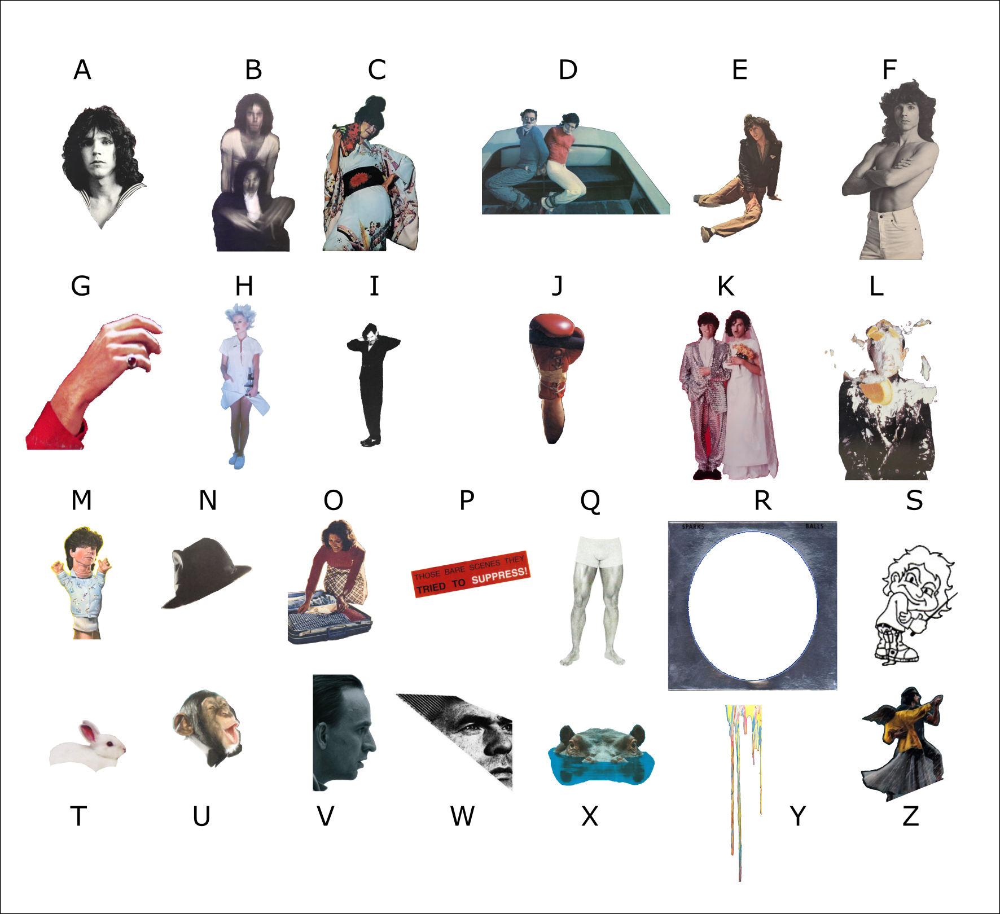

Each album cover is a collage of elements from the cover of one of the twenty-six studio albums released by the band Sparks as of January 2022. Assigning the letters A-Z to those albums in chronological order, the image corresponding to each letter is identifiable using the guide below:
V is unused in the puzzle.
Parsing each image as a collection of letters, we get the following values:
| AGIIIILLMORU | IIIIORRSSSSS | ACEEHIKLLU |
| ADEEFIILNNRRSS | AABCCEEHHIIILLLLOOOPQTTTTUUZZ | AAAAHKKKORSTT |
| AAAEEEEHILLOPRST | AABEHNORSTY | AHIJNNNOSSUWY |
| AEIIIKMNNOPRRSSST | AABEEEHIJLNORTZ | AABCEIILNN |
| AAACCEEEGHLLLMRSWWX | BDEEHJOT | EEHILMRUUYY |
We'll come back to these in a second.
Each of the clues below the album covers is pair of sentences describing a pair of siblings from pop culture:
| First Line of Clue | Sibling (and Surname) | Second Line of Clue | Sibling | Where Siblings are From |
|---|---|---|---|---|
| Why isn't Russell breathing? | Abel | It's all Ron's doing. | Cain | The Bible |
| Russell gets Scarlet Fever. | Beth (March) | Writer: Ron. | Jo | Little Women |
| Faults empower Ron. | Meg (Murray) | Though Russell's small for his given age, he's a prodigy that helps defeat evil. | Charles Wallace | A Wrinkle in Time |
| Despite some misunderstandings, at last a gentleman marries Russell. | Elizabeth (Bennett) | Everyone prefers Ron's groom | Jane | Pride and Prejudice |
| Where is Russell's first wife? | Niles (Crane) | Maybe she likes Ron's popular radio show. | Frasier | Frasier |
| Leftist Ron wants revolution. | Huey (Freeman) | Russell would rather be gangsta. | Riley | The Boondocks |
| Ron likes wearing feathers and is in charge of wind and wisdom. | Quetzalcoatl | Conversely, Russell likes war and is in charge of keeping the sun in the sky. | Huitzlopochtli | Aztec Mythology |
| Poor Russell's husband's dismembered! | Isis | Eventually Ron's remains are all recovered. | Osiris | Egyptian Mythology |
| No one can see Ron. | Susan (Storm) | It's Russell who's the hot one! | Johnny | Fantastic Four comics |
| Being "powerless" never stopped Ron. | Sokka | Fluid motion is more Russell's thing. | Katara | Avatar: The Last Airbender |
| Rotten luck when it's Russell's name that's called. | Primrose (Everdeen) | Ever protective, Ron volunteers in his place. | Katniss | The Hunger Games |
| A lover suggests Russell enter a convent. | Ophelia | Vengeance for some losses falls to Ron. | Laertes | Hamlet |
| A retiree trains Ron. | Luke | Russell's treated like royalty. | Leia | Star Wars |
| It's always Ron's name first. | Mario (Mario) | But Russell often jumps higher. | Luigi | Video Games |
| Russell was kidnapped away! | Toby (Williams) | Now Ron must encounter puppets. | Sarah | Labyrinth |
Clues are ordered by the alphabetically earlier sibling. Ron is always the older of the two siblings.
Each decoded album cover contains all the letters of one of the pairs of siblings, plus two extra letters:
| First Line of Clue | Sibling | Second Line of Clue | Sibling | Letters from Corresponding Album Cover | Extra Letters | Letter in First Name | Letter in Second Name |
|---|---|---|---|---|---|---|---|
| Why isn't Russell breathing? | Abel | It's all Ron's doing. | Cain | AABCEIILNN | IN | E | I |
| Russell gets Scarlet Fever. | Beth | Writer: Ron. | Jo | BDEEHJOT | DE | B | O |
| Faults empower Ron. | Meg | Though Russell's small for his given age, he's a prodigy that helps defeat evil. | Charles Wallace | AAACCEEEGHLLLMRSWWX | XW | G | H |
| Despite some misunderstandings, at last a gentleman marries Russell. | Elizabeth | Everyone prefers Ron's groom | Jane | AABEEEHIJLNORTZ | OR | H | N |
| Where is Russell's first wife? | Niles | Maybe she likes Ron's popular radio show. | Frasier | ADEEFIILNNRRSS | DN | L | S |
| Leftist Ron wants revolution. | Huey | Russell would rather be gangsta. | Riley | EEHILMRUUYY | UM | U | R |
| Ron likes wearing feathers and is in charge of wind and wisdom. | Quetzalcoatl | Conversely, Russell likes war and is in charge of keeping the sun in the sky. | Huitzlopochtli | AABCCEEHHIIILLLLOOOPQTTTTUUZZ | BE | Q | U |
| Poor Russell's husband's dismembered! | Isis | Eventually Ron's remains are all recovered. | Osiris | IIIIORRSSSSS | RS | S | S |
| No one can see Ron. | Susan | It's Russell who's the hot one! | Johnny | AHIJNNNOSSUWY | WI | N | O |
| Being "powerless" never stopped Ron. | Sokka | Fluid motion is more Russell's thing. | Katara | AAAAHKKKORSTT | TH | A | R |
| Rotten luck when it's Russell's name that's called. | Primrose | Ever protective, Ron volunteers in his place. | Katniss | AEIIIKMNNOPRRSSST | IN | R | T |
| A lover suggests Russell enter a convent. | Ophelia | Vengeance for some losses falls to Ron. | Laertes | AAAEEEEHILLOPRST | EA | E | S |
| A retiree trains Ron. | Luke | Russell's treated like royalty. | Leia | ACEEHIKLLU | CH | E | L |
| It's always Ron's name first. | Mario | But Russell often jumps higher. | Luigi | AGIIIILLMORU | LI | R | U |
| Russell was kidnapped away! | Toby | Now Ron must encounter puppets. | Sarah | AABEHNORSTY | NE | T | A |
Read in clue order, the extra letters spell out INDEX WORD NUMBERS WITHIN EACH LINE.
Each clue has the same number of words as the character's name. Taking the position of "Ron" and "Russell" in each set of clues and extracting the letters in the same position of the names of the characters, this gives a new set of bigrams. Putting these bigrams in order by album cover spells out:
| RU | SS | EL |
| LS | QU | AR |
| ES | TA | NO |
| RT | HN | EI |
| GH | BO | UR |
The UK spelling of "neighbour" suggests we want the London Underground. Tracing along the Piccadilly Line northward from Russell Square, the next station along the line is KINGS CROSS ST PANCRAS.